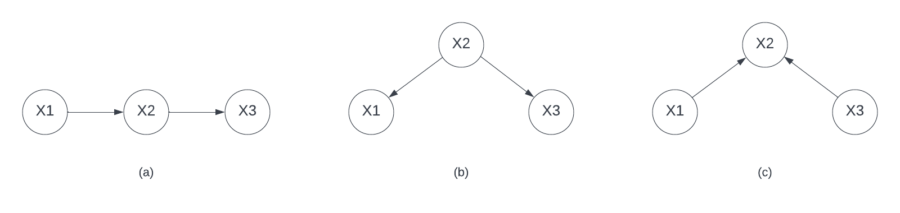
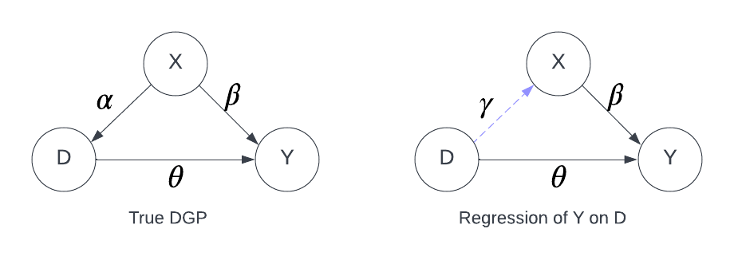
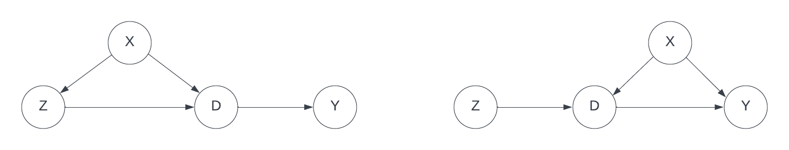
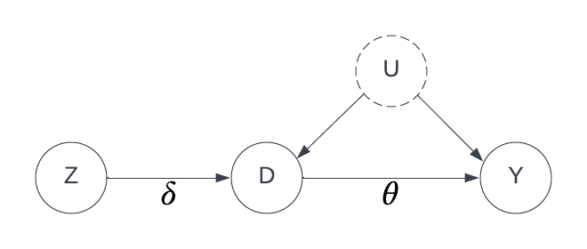
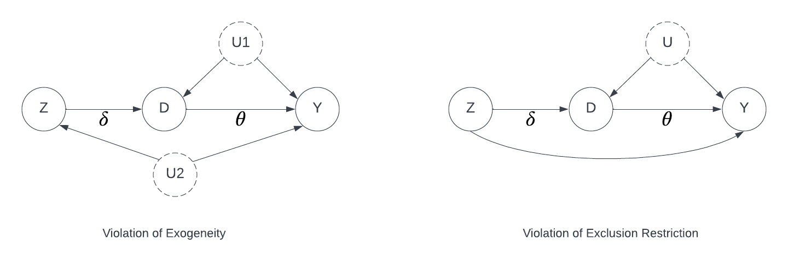
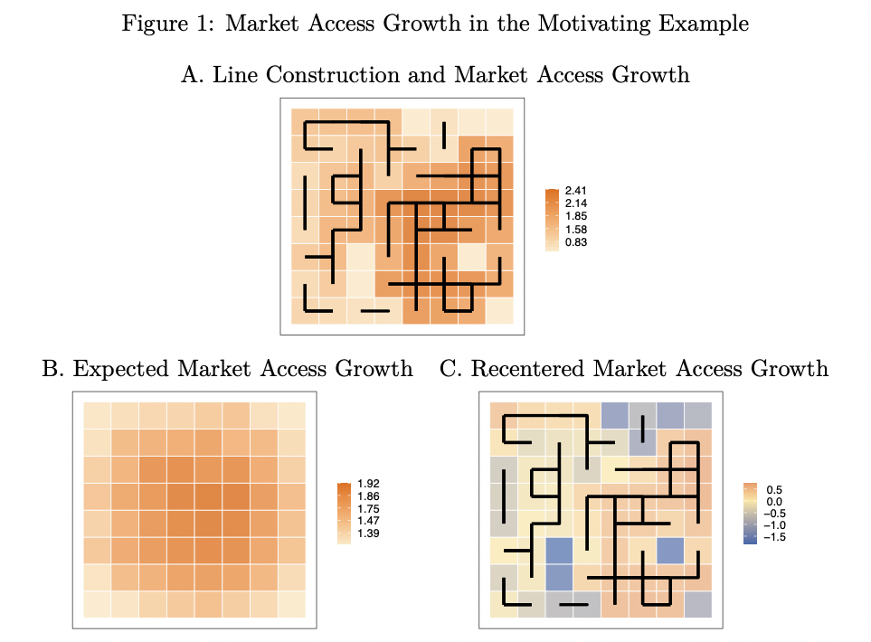
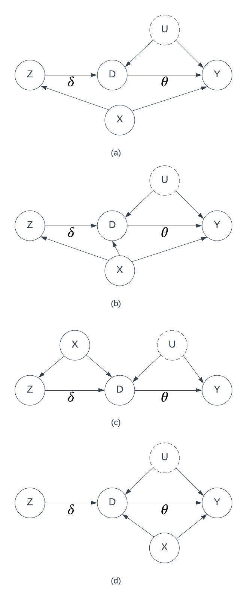
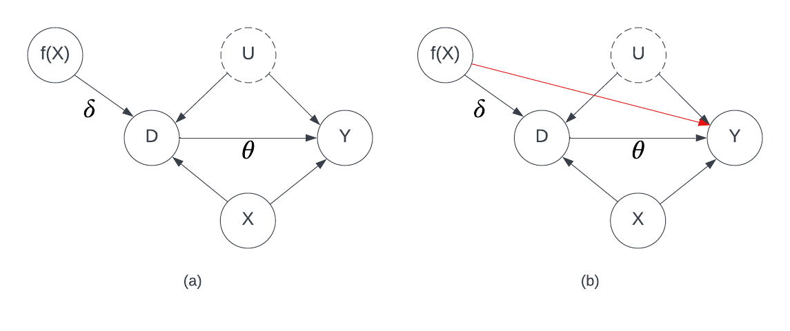
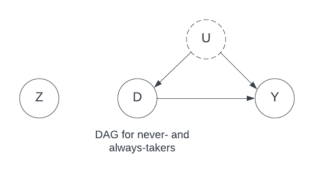

5 Instrumental Variable
5.1 Recap of DAG: Flow of Association and Causation
A Directed Acyclic Graph is a diagram with nodes and unidirectional links, which represents the relationship between variables. It can be used to discover or visualize identification strategy for regression. We will review some basic properties of DAG introduced in Chapter Chapter 3.
Open and Closed Paths
As long as two directed links are not opposite, the path is open, so (a) and (b) are open while (c) is closed. If the path between \(X_1\) and \(X_3\) is open, then \(X_1\) and \(X_3\) are related. We can also distinguish the relationship in (a) and (b). If the links in one open path are in the same direction, then this path represents a causal relationship, otherwise, the relationship is association. Now we can give a full description to the three diagrams: in (a), \(X_1\) is a cause of \(X_3\), and \(X_2\) is usually called a mediator; in (b), \(X_1\) is correlated with \(X_3\), and \(X_2\) is called a confounder; in (c), \(X_1\) is not correlated with \(X_3\), and \(X_2\) is called a collider.
For open paths as in (a) and (b), conditioning (control) on the node on the path \(X_2\) will block the path, and for the closed path in (c), conditioning on \(X_2\) will open the path.
Identification by DAGs
Let \(D\) denote treatment, \(Y\) denote outcome, \(X\) denote confounders, the relationship can be represented by

Assume that all the effects are linear and \(\gamma\) is the projection coefficient of \(X\) on \(D\). The identification strategy is to regress \(Y\) on \(D\) controlling for \(X\). Using the DAG language, there are two open paths between \(D\) and \(Y\) and the direct link is the causal effect. Regressing \(Y\) on \(D\) gives us the the total association \(\theta + \gamma\beta\) between \(D\) and \(Y\) (note that this is the OVB when omitting \(X\)), but by controlling for \(X\), we block the upper path and identify the causal effect \(\theta\).
Consider two hypothetical examples:

How to identify the causal effect of \(Z\) on \(Y\) in the two diagrams? For the left one, we regress \(Y\) on \(Z\) conditioning on \(X\). For the right one, we regress \(Y\) on \(Z\) only because the path \(Z \rightarrow D \leftarrow X \rightarrow Y\) is closed by \(D\). If we focus on the causal effect of \(D\) on \(Y\) and \(X\) is unobserved, the right one is the IV identification.
5.2 IV by DAG

The basic relationship (no covariates) of IV, treatment and outcome is represented in the diagram above. \(D\) is endogenous because it is correlated with the error term \(U\) of \(Y\), and because \(U\) is unobserved, we cannot identify \(\theta\) by conditioning on \(U\). What we can identify is the causal effect of \(Z\) on \(Y\) and \(\delta\). Then it leads to the two estimation methods using IV: Indirect least squares (ILS) and 2SLS
For ILS, we follow the procedure:
- Regress \(D\) on \(Z\) and obtain the effect \(\hat\delta\)
- Regress \(Y\) on \(Z\) and obtain the effect \(\hat\gamma = \hat\delta\hat\theta\)
- The \(\hat\theta = \hat\gamma / \hat\delta\)
For 2SLS,
- Regress \(D\) on \(Z\) and obtain fitted value \(\hat{D}\)
- Regress \(Y\) on \(\hat{D}\) to obtain \(\hat\theta\)
By using \(\hat{D}\), we are cutting the link from \(U\) to \(D\) because \(\hat{D}\) is a function of \(Z\), which is uncorrelated with \(U\).
5.2.1 Assumptions of IV
There are two assumptions for IV
- Exogeneity: \(\mathbb{E}[Z\epsilon] = 0\)
- Relevance: \(Cov(Z, D) \neq 0\)
If \(\delta = 0\), the relevance assumption is violated. If \(U\) (or part of \(U\)) has a link to \(Z\), the Exogeneity assumption is violated. Sometimes, people replace the exogeneity by exclusion restriction, which states there is no direct effect from \(Z\) to \(Y\). We can distinguish the two assumptions easily by DAG

Strictly speaking, exogeneity implies exclusion restriction and should be the more “appropriate” assumption for IV.
Non-Random Exposure to Exogenous Shocks by Borusyak and Hull (2020)
Checking the exogeneity \(Z\) is crucial to obtain consistent IV estimator. Borusyak and Hull (2020) examines the exogeneity of instruments/treatments which are generated by a combination of exogenous shocks and non-random exposures, and provide solutions to ensure the exogeneity. Such instruments include
- Shift-share instruments (Bartik instrument): \(Z_i = \sum_k w_{ik} * G_k\), e.g. \(Z_i\) as an instrument for region \(i\)’s employment growth, where \(G_k\) is national growth of industry \(k\) and \(w_{ik}\) are lagged employment shares.
- Instruments/treatments capturing spillovers in social or transport networks, e.g. the number of neighbors for a randomly selected region.
- Regional growth of market access from transportation upgrades, e.g. timing of upgrade & location and size of regional markets.
- Eligibility for a public program, e.g. eligibility \(Z_i\) determined by state level policy & individual characteristics and eligibility as an instrument for participation.
The solution provided by Borusyak and Hull (2020) is called recentering: \(\tilde{Z} = Z - \mathbb{E}[Z|w]\). For example, the eligibility of an individual can be simulated/predicted by one’s characteristics if we know the criteria for eligibility. Consider the illustrative example in Borusyak and Hull (2020), we explore the effect of market access (MA) growth on some regional outcome (e.g. local employment growth) in 64 equally-sized regions and the map is a rectangle. Out of all potential roads connecting adjacent regions, we randomly select half of them to construct, and one such experiment will result in Panel A in Figure 1. If we run 1000 draws, we obtain the expected MA growth as in Panel B and the MA growth is obviously non-random and is associated with location. The recentered MA instrument is shown in Panel C.

5.2.2 IV with Covariates
In empirical analysis, it is more common that the exogeneity assumption is not satisfied unconditionally, and we need to add covariates to the regression to ensure the exogeneity of instrument variable. In the literature, it is rarely discussed when we should include covariates or why we should include the covariates. If we look at the structural equation of \(Y\), we can include \(X\) as long as \(X\) is exogenous. But is it always necessary? We can try to gain some ideas from DAG.
To answer the question on what kind of covariates need to be controlled for, we assume 4 different relationship between \(Z, D, Y\) and \(X\) and discuss the identification of the effect of \(Z\) on \(D\) and \(Y\).

The table below shows the minimal requirement to get consistent estimator for \(\theta\). However, in all 4 diagrams, controlling \(X\) does no harm to the consistency, and this is what econometricians usually do. It is worth noting that in (c), even if we do not identify \(\delta\), we can still get consistent estimator of \(\theta\). This is consistent with the relevance assumption as we only need \(Z\) to be relevant to \(D\), and whether this relevance is causal or not is not important in terms of estimating \(\theta\).
| ILS | 2SLS | |
|---|---|---|
| (a) | \(D = \delta Z + v\) | \(D = \delta Z + v\) |
| \(Y = \gamma Z + \beta X+ u\) | \(Y = \theta\hat{D} + \beta X + \epsilon\) | |
| (b) | \(D= \delta Z + \alpha X + v\) | \(D = \delta Z + \alpha X + v\) |
| \(Y = \gamma Z + \beta X + u\) | \(Y = \theta\hat{D} + \beta X + \epsilon\) | |
| (c) | \(D = \delta Z+ v\) | \(D = \delta Z + v\) |
| \(Y = \gamma Z + u\) | \(Y = \theta\hat{D} + \epsilon\) | |
| (d) | \(D = \delta Z + v\) | \(D = \delta Z + v\) |
| \(Y = \gamma Z + u\) | \(Y = \theta\hat{D} +\epsilon\) |
Included and Excluded Instruments
Consider the structural equation of \(Y\) when we have covariates \(X\): \[ Y = \theta D + X\beta + \epsilon \tag{5.1}\]
There is an implicit assumption for \(X\) to ensure consistent estimator of \(\theta\), which is the exogoneity of \(X\), namely \(\mathbb{E}[X\epsilon] = 0\). Both \(X\) and \(Z\) are exogenous and because of this property, \(X\) and \(Z\) are usually called included and excluded instruments respectively. In the literature, there is a long-standing identification strategy in which a function \(f(X)\) is used to instrument \(D\). A famous example is to use interactions between elements of \(X\) as an instrument for \(D\) (Gentzkow and Shapiro 2008). In this case, the assumed DAG is (a).

However, the potential threat to using an included instrument is the misspecification in Equation 5.1. The idea of using a function of included instrument is that we captured all of the effects of \(X\) on \(Y\) by Equation 5.1. But if the true DGP is instead \[ Y = D\theta + X\beta_1 + X^2\beta_2 + \epsilon \] but one uses the structural equation Equation 5.1 and uses \(X^2\) to instrument \(D\), then we have the DAG (b), where \(\theta\) is not identified. Andrews et al. (2022) discussed this problem more generally and in proposition 2, they derived the formula of linear IV estimator with included instrument when \(Y\) is \(D\theta +\) an arbitrary function of \(X\). The main takeaway is that when we use included instruments, the misspecification of \(Y\) will bias the IV estimator, but this is not a problem with excluded instrument.
5.3 Local ATE
The LATE is the causal interpretation of the IV estimand when \(D\) and \(Z\) are both binary variables with heterogeneous treatment effect. We define the potential status of treatment \(D(z) = D(Z = z)\). We can think of the binary instrument as an encourage to take the treatment and segment the population into 4 principle strata:
- Compliers: always take the treatment that they’re encouraged to take. Namely, \(D(1) = 1\) and \(D(0) = 0\).
- Always-takers: always take the treatment, regardless of encouragement. Namely, \(D(1) = 1\) and \(D(0) = 1\).
- Never-takers: never take the treatment, regardless of encouragement. Namely, \(D(1) = 0\) and \(D(0) = 0\).
- Defiers: always take the opposite treatment of the treatment that they are encouraged to take. Namely, \(D(1) = 0\) and \(D(0) = 1\).
The 4 strata can not be distinguished by the observed value of \(Z\) and \(D\), because
- \(D = 0, Z = 0\): compliers or never-takers
- \(D = 0, Z = 1\): defiers or never-takers
- \(D = 1, Z = 0\): defiers or always-takes
- \(D = 1, Z = 1\): compliers or always-takers
The current problem we have is that we cannot identify the principle strata and because of heterogeneous treatment effect, we are not sure what is estimated using IV. We need more assumptions to identify a causal effect. We need an assumption to rule out defiers
Assumption (Monotonicity) \[ D(Z = 1) \geqslant D(Z = 0) \quad \text{for all individuals} \]
Define the LATE as \[ LATE = \mathbb{E}[Y(D = 1) - Y(D = 0)|\text{Complier}] = \mathbb{E}[Y(D = 1) - Y(D = 0)|D(1) = 1, D(0) = 0] \]
Then we have the following theorem
Theorem 5.1 LATE is identified by the IV estimand which is equivalent to the Wald estimand, namely \[ LATE = \frac{\mathbb{E}[Y|Z = 1] - \mathbb{E}[Y|Z = 0]}{\mathbb{E}[D|Z = 1] - \mathbb{E}[D|Z = 0]} \]
Proof. First consider \[\begin{aligned} &\mathbb{E}[Y(Z = 1) - Y(Z = 0)] \\ = &\mathbb{E}[Y(Z = 1) - Y(Z = 0)|D(1) = 0, D(0) = 0]P(D(1) = 0, D(0) = 0) \quad \quad \ \text{never-taker}\\ & + \mathbb{E}[Y(Z = 1) - Y(Z = 0)|D(1) = 1, D(0) = 0]P(D(1) = 1, D(0) = 0) \quad \text{complier}\\ & + \mathbb{E}[Y(Z = 1) - Y(Z = 0)|D(1) = 0, D(0) = 1]P(D(1) = 0, D(0) = 1) \quad \text{defier}\\ & + \mathbb{E}[Y(Z = 1) - Y(Z = 0)|D(1) = 1, D(0) = 1]P(D(1) = 1, D(0) = 1) \quad \text{always-taker} \end{aligned}\] By Monotonicity, \(P(D(1) = 0, D(0) = 1) = 0\). For always-takers and never-takers, \(\mathbb{E}[Y(Z = 1) - Y(Z = 0)] = 0\) because for those two strata, \(D\) is not determined by \(Z\) and thus there is no effect of \(Z\) on \(Y\).

Therefore, \[ \mathbb{E}[Y(Z = 1) - Y(Z = 0)] = \mathbb{E}[Y(Z = 1) - Y(Z = 0)|D(1) = 1, D(0) = 0]P(D(1) = 1, D(0) = 0) \] which implies \[\begin{aligned} &\mathbb{E}[Y(Z = 1) - Y(Z = 0)|D(1) = 1, D(0) = 0] \\[4pt] = &\frac{\mathbb{E}[Y(Z = 1) - Y(Z = 0)]}{P(D(1) = 1, D(0) = 0)} \\[4pt] = &\frac{\mathbb{E}[Y|Z = 1] - \mathbb{E}[Y|Z = 0]}{P(D(1) = 1, D(0) = 0)} \quad \text{exogeneity of} \ Z \\[4pt] = &\frac{\mathbb{E}[Y|Z = 1] - \mathbb{E}[Y|Z = 0]}{1 - P(D = 0|Z = 1) - P(D = 1|Z = 0)} \quad \text{no defiers} \\[4pt] = &\frac{\mathbb{E}[Y|Z = 1] - \mathbb{E}[Y|Z = 0]}{P(D = 1|Z = 1) - P(D = 1|Z = 0)} \\[4pt] = &\frac{\mathbb{E}[Y|Z = 1] - \mathbb{E}[Y|Z = 0]}{\mathbb{E}[D|Z = 1] - \mathbb{E}[D|Z = 0]} \end{aligned}\]
When is 2SLS actually LATE? by Blandhol et al. (2022)
The theory of LATE built under the unconditional exogeneity of \(Z\). When \(Z\) is exogenous conditioning on \(X\), it seems to be a natural extension to use 2SLS estimation. This extension was employed in many empirical works but not examined until Blandhol et al. (2022). The idea is to transform 2SLS with covariates to the case without covariates by partialling out \(X\) from \(Z\).
Consider the case with 1 instrument \[ \beta_{iv} = \frac{\mathbb{E}[YZ^{\perp X}]}{\mathbb{E}[DZ^{\perp X}]} \quad \text{where} \quad Z^{\perp X} = Z - \mathbb{L}[Z|X], \ \mathbb{L}[Z|X] = X'\mathbb{E}[X'X]^{-1}\mathbb{E}[XZ] \] Blandhol et al. (2022) decomposes \(\beta_{iv}\) in proposition 1 \[ \beta_{iv} = \mathbb{E}[\omega(CP, X)\Delta(CP, X)] + \mathbb{E}[\omega(AT, X)\Delta(AT, X)] \] where \(\Delta(CP, X)\) and \(\Delta(AT, X)\) are the treatment effect for compliers and always-takers respectively, and \[\begin{aligned} &\omega(CP, X) = \mathbb{E}[Z|X](1 - \mathbb{L}[Z|X])P(CP|X)\mathbb{E}[DZ^{\perp X}]^{-1} \\ &\omega(AT, X) = (\mathbb{E}[Z|X] - \mathbb{L}[Z|X])P(AT|X)\mathbb{E}[DZ^{\perp X}]^{-1} \end{aligned}\]
This proposition shows that if there are covariates in 2SLS, the estimator will be a combination of expectations of weighted LATE and treatment effect for always-takers. Note that the weight on always-takers is the difference between \(\mathbb{E}[Z|X]\) and \(\mathbb{L}[Z|X]\), which means that the second term in \(\beta_{iv}\) is 0 when \(\mathbb{E}[Z|X] = \mathbb{L}[Z|X]\). We discussed the special cases where this equation holds inherently in Section Section 3.3: \(Z\) and \(X\) are jointly normal; \(Z\) is a saturated model of \(X\). But in general, 2SLS estimator will be biased by a weighted treatment effect for always-takers.
Even if the \(\mathbb{E}[Z|X] = \mathbb{L}[Z|X]\), \(\beta_{iv}\) is still a weighted LATE with the weight unknown, and its interpretation is a problem. I think the easiest way to fix this is to use nonparametric IV regression (Newey 2013) or Double Machine Learning (Chernozhukov et al. 2018), where we do not rely on the linearity assumption and estimate \(\mathbb{E}[Z|X]\) nonparametrically.
5.4 Be Careful with IV
There three papers we discussed above are all about the abuse of IV in the empirical literature. There are actually more threats in IV regression, such as
- The standard error of LATE in over-identified 2SLS is inconsistently estimated (Lee 2018)
- Using Many instruments can lead to inaccurate inference (Hansen, Hausman, and Newey 2008)
And more and more retrospective papers are uncovering the big problem of weak instruments in empirical research
- Keane and Neal (2021) suggested that the critical value of F-test for weak instrument should be at least 50 (the conventional one was about 10-30)
- Andrewsi, Stocki, and Sun (2018) did a survey on AER papers 2014-2018 and more than half of the papers reported F-stats less than 15. Some of the papers did not report F-stats
- Lal et al. (2021) replicated 61 papers 2010-2020 in political science and found that when replacing the reported SEs with bootstrapped SEs, 41% becomes statistically insignificant; 33% of the studies have a 2SLS estimates at least 5 times larger than OLS estimates
Updated Weak Instrument Thresholds
The conventional Staiger-Stock rule of F > 10 for the first-stage F-statistic may be insufficient. Lee et al. (2022) and Keane & Neal (2023) suggest thresholds of F > 50 or higher may be needed for reliable inference.
Econometricians still know very little about 2SLS and LATE, so when practicing IV regression, it is never too careful to check the estimation assumptions in 2SLS and the identification assumption in LATE if you are expecting a causal relationship.
5.5 Modern IV Estimation in R
The discussion so far has been largely theoretical. In this section, we demonstrate how to estimate IV models in R using the fixest package, which provides a concise syntax for 2SLS estimation and integrates well with fixed effects and clustered standard errors.
5.5.1 2SLS with fixest
The fixest package uses the syntax feols(Y ~ exog | fixed_effects | endog ~ instruments). When there are no fixed effects, we use 1 as a placeholder. Below, we simulate a simple IV setting where the true causal effect of \(D\) on \(Y\) is 1, but OLS is biased upward due to the unobserved confounder \(U\).
Code
library(fixest)
# Simulate IV data
set.seed(123)
n <- 1000
U <- rnorm(n) # unobserved confounder
Z <- rnorm(n) # instrument
D <- 0.5*Z + 0.5*U + rnorm(n) # endogenous treatment
Y <- 1*D + U + rnorm(n) # outcome (true effect = 1)
dat <- data.frame(Y, D, Z)
# OLS (biased due to U)
ols <- feols(Y ~ D, data = dat)
# 2SLS using fixest
iv <- feols(Y ~ 1 | D ~ Z, data = dat)
etable(ols, iv, headers = c("OLS", "2SLS")) ols iv
OLS 2SLS
Dependent Var.: Y Y
Constant 0.0036 (0.0419) 0.0057 (0.0429)
D 1.371*** (0.0341) 1.137*** (0.0748)
_______________ _________________ _________________
S.E. type IID IID
Observations 1,000 1,000
R2 0.61796 0.09270
Adj. R2 0.61758 0.09180
---
Signif. codes: 0 '***' 0.001 '**' 0.01 '*' 0.05 '.' 0.1 ' ' 15.5.2 Interpreting the First-Stage F-Statistic
The first-stage F-statistic tests whether the instrument \(Z\) is sufficiently correlated with the endogenous variable \(D\). A weak instrument (low F-statistic) leads to biased 2SLS estimates and unreliable inference. The fixest package reports first-stage diagnostics automatically in the summary() output of IV models.
Practical Rule of Thumb
Always inspect the first-stage F-statistic. As noted in the callout above, recent work by (lee2022valid?) and Keane and Neal (2021) argues that the traditional threshold of F > 10 is far too lenient. Aim for F > 50 to ensure that weak-instrument bias does not distort your 2SLS estimates. When the F-statistic is borderline, consider Anderson-Rubin confidence sets, which remain valid regardless of instrument strength.
Further Reading
For deeper coverage of the topics in this chapter, consult the following references:
- Weak instruments: (lee2022valid?) provide valid t-ratio inference for IV; Andrewsi, Stocki, and Sun (2018) survey weak instruments in applied work; Keane and Neal (2021) update F-test thresholds.
- Shift-share / Bartik instruments: (goldsmith2020bartik?) formalize when shift-share instruments identify causal effects via exogenous shocks versus exogenous shares.
- LATE and covariates: Blandhol et al. (2022) clarify when 2SLS with covariates recovers a proper LATE.
- Non-random exposure: Borusyak and Hull (2020) develop the recentering approach for instruments combining exogenous shocks with non-random exposure.
- Software: The
fixestpackage (berge2018fixest?) provides fast IV estimation with fixed effects viafeols(). Theivregpackage offers classical IV regression with built-in diagnostics (Sargan, Wu-Hausman, weak instrument tests).
Andrews, Isaiah, Nano Barahona, Matthew Gentzkow, and NBER Ashesh Rambachan. 2022. “Included and Excluded Instruments in Structural Estimation.”
Andrewsi, Isaiah, James Stocki, and Liyang Sun. 2018. “Weak Instruments in IV Regression: Theory and Practice.”
Blandhol, Christine, John Bonney, Magne Mogstad, and Alexander Torgovitsky. 2022. “When Is Tsls Actually Late?” National Bureau of Economic Research.
Borusyak, Kirill, and Peter Hull. 2020. “Non-Random Exposure to Exogenous Shocks: Theory and Applications.” National Bureau of Economic Research.
Chernozhukov, Victor, Denis Chetverikov, Mert Demirer, Esther Duflo, Christian Hansen, Whitney Newey, and James Robins. 2018. “Double/Debiased Machine Learning for Treatment and Structural Parameters.” Oxford University Press Oxford, UK.
Gentzkow, Matthew, and Jesse M Shapiro. 2008. “Preschool Television Viewing and Adolescent Test Scores: Historical Evidence from the Coleman Study.” The Quarterly Journal of Economics 123 (1): 279–323.
Hansen, Christian, Jerry Hausman, and Whitney Newey. 2008. “Estimation with Many Instrumental Variables.” Journal of Business & Economic Statistics 26 (4): 398–422.
Keane, Michael P, and Timothy Neal. 2021. “A Practical Guide to Weak Instruments.”
Lal, Apoorva, Mackenzie William Lockhart, Yiqing Xu, and Ziwen Zu. 2021. “How Much Should We Trust Instrumental Variable Estimates in Political Science? Practical Advice Based on over 60 Replicated Studies.” Practical Advice Based on Over 60.
Lee, Seojeong. 2018. “A Consistent Variance Estimator for 2SLS When Instruments Identify Different LATEs.” Journal of Business & Economic Statistics 36 (3): 400–410.
Newey, Whitney K. 2013. “Nonparametric Instrumental Variables Estimation.” American Economic Review 103 (3): 550–56.